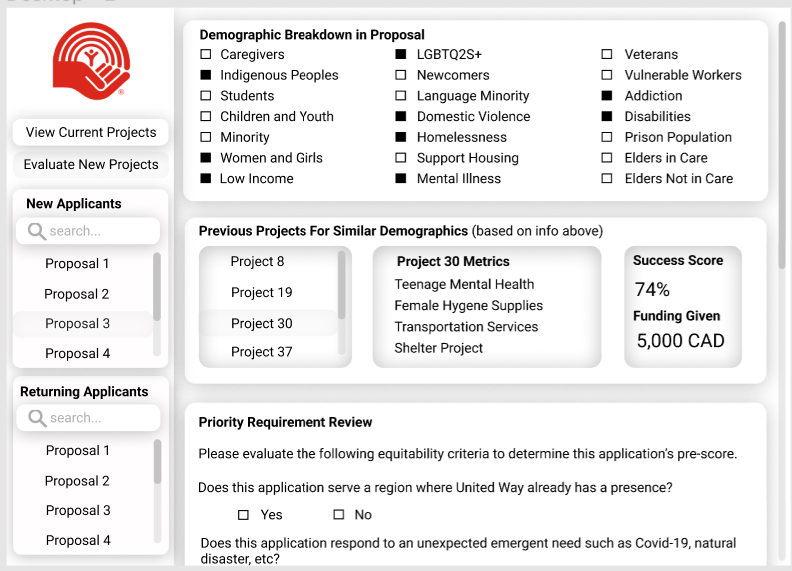
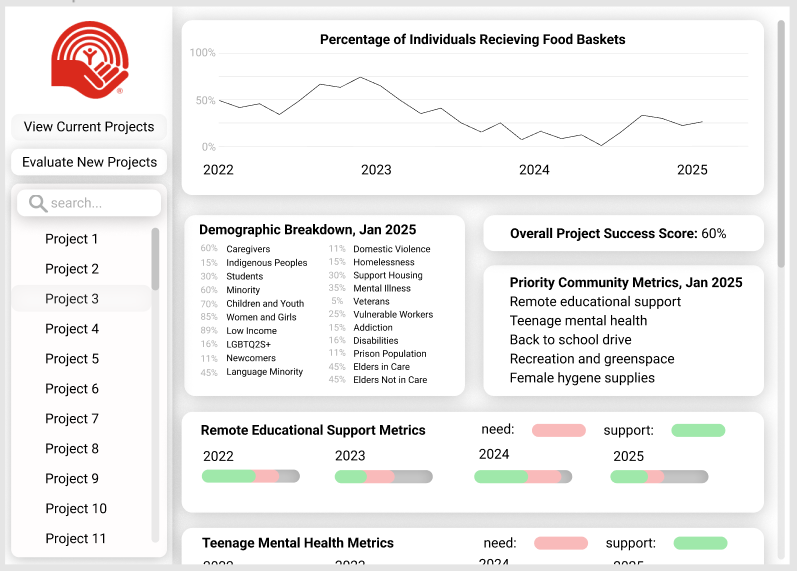

This project was created for a hackathon between Northeastern University and United Way in March 2022. It was completed over the course of two days, and we placed third in the results. My role was to lead the group in breaking down the scenario and our objectives, developing a dashboard in figma, and creating all of our written components. View the project on github here.
Our project provides a way to collect more granular data from the individuals in communities who benefit from United Way's funding. This project consists of a web app that users receiving support at food hubs can access and fill out to obtain a QR code. They are then able to scan this QR code everytime they return to the foodhub. This gives us a low friction way to track how frequently some users go to a certain foodhub, roughly how many people are being serviced, and how many are going to more than one food hub supported by United Way. Our project also contains an additional form that can be filled out by community individuals monthly, biannually, or as often as United Way would like to collect this granular data. The information in this ongoing granular data collection could then ultimately be used to generate community specific metrics, to measure the success of a project in a community, by the community's own terms.
The users for this application will be both United Way, and the individuals in communities that are being served by United Way's funding support.
This data collection will provide United Way with sound information from the individuals that they are directly helping, which can then be used for equitable funding allocation, knowledge sharing at community of practice meetings, and even fundraising.
This first dashboard image depicts one way this data could be visualized after several years of collection. On the lefthand side, note that the user can select from different projects that they have funded, to view stats. Among these stats may be a multi-year graph that shows how many people have used a particular food hub over the years, the demographic breakdown of people using that food hub, as well as important metrics, unique to that community, and articulated by individuals in that community through our recurring surveys. Our dashboard can also have a breakdown of success with important community metrics over the years, and a general success score, based on how well the organizers of that particular project were able to meet the articulated needs of the community over the years.
This second dashboard image depicts a process for evaluating incoming grant proposals from organizations asking for funding. United Way can view if a new proposal is coming from an applicant they have worked with before (and have data on), or if the proposal is coming from an entirely new organization, and a community that we don't yet have data on. In this example, the user has selected a form for a project from a new applicant that United Way has not yet worked with. They can select the demographics served by this incoming project (from the application), and view past projects that serve a similar demographic breakdown. There is then a section for United Way to answer questions about the application, and generate a score to help asess the application.
[back](./)